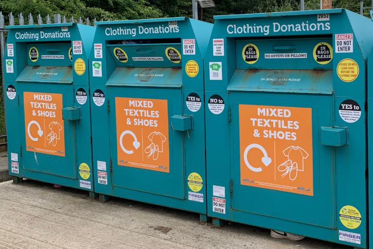
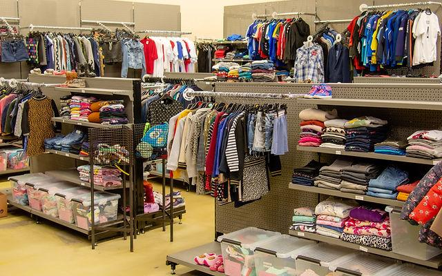
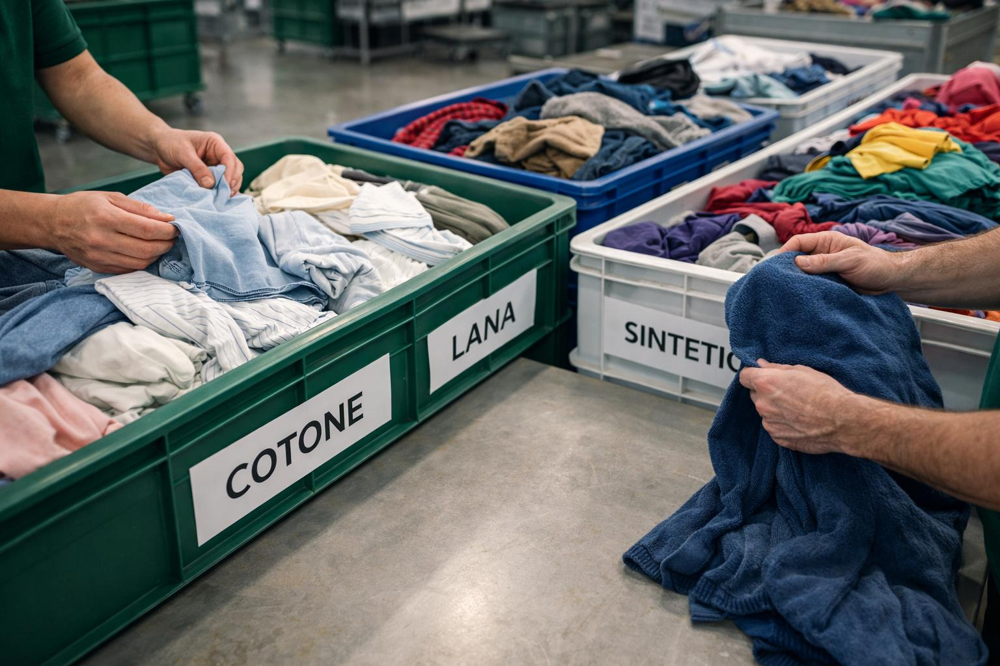
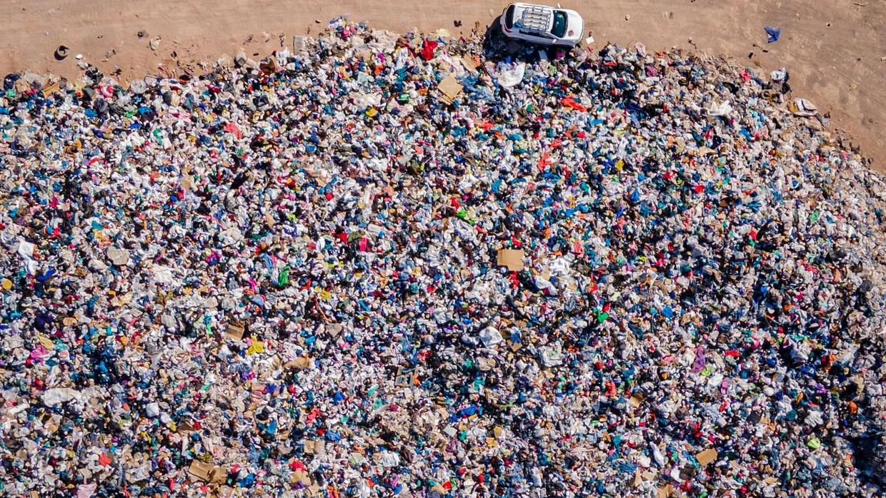

End of Life
What happens when a T-shirt is no longer wanted?

Eventually, a cotton T-shirt may become damaged, worn out or unwanted. Instead of immediately throwing it away, it can be repaired, reused, donated or recycled. The way a garment is discarded determines what happens to its materials and how much waste it creates.
♻️ Key Facts
- Clothing can be donated or passed on to other people.
- Damaged T-shirts can sometimes be repaired or reused as cleaning cloths.
- Some cotton textiles can be recycled into fibres for new products.
- Clothing that cannot be reused or recycled may end up in landfill or be incinerated.
- Blended fabrics and dyes can make textile recycling more difficult.
Where Does the T-shirt Go?
There are different ways to deal with unwanted clothing.

Reuse or Donate
A T-shirt that is still wearable can be passed to another person, donated or sold as second-hand clothing. This extends its useful life.

Recycling
Cotton textiles may be broken down into fibres and used to make new materials or products, depending on their condition and composition.

Landfill
Clothing that is thrown away may end up in landfill. It occupies space and may take a long time to break down.
💡 Making Better Choices
- Repair damaged clothing where possible.
- Donate or pass on T-shirts that are still wearable.
- Use textile collection programmes where available.
- Avoid throwing away clothing that can still be used.
🌱 The Journey Continues
The journey of a cotton T-shirt does not have to end with disposal. Repairing, reusing and recycling clothing can help reduce waste and make better use of the resources used to produce it.
Return to Home →